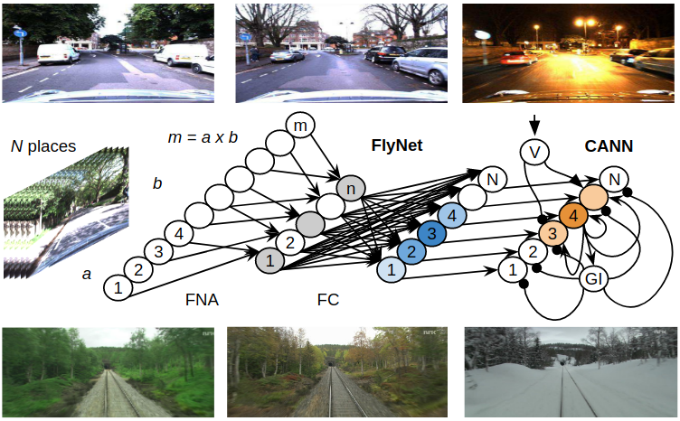

{{ page.title }}
Marvin Chancán1,3 Luis Hernandez-Nunez2,3 Ajay Narendra4 Andrew B. Barron4 Michael Milford1
1Queensland University of Technology 2Harvard University 3Universidad Nacional de Ingeniería 4Macquarie University
IEEE Robotics and Automation Letters (RA-L)

|
Abstract
State-of-the-art algorithms for visual place recognition, and related visual navigation systems,
can be broadly split into two categories: computer-science-oriented models including deep learning
or image retrieval based techniques with minimal biological plausibility, and neuroscience-oriented
dynamical networks that model temporal properties found in neural cells underlying spatial navigation
in the brain. In this paper, we propose a new compact and high-performing place recognition hybrid
model that bridges this divide for the first time. Our approach comprises two key components that
incorporate neural models of these two categories: (1) FlyNet, a compact, sparse two-layer neural
network inspired by brain architectures of fruit flies, Drosophila melanogaster, and (2) a one-dimensional
continuous attractor neural network (CANN). The resulting FlyNet+CANN network combines the compact
pattern recognition capabilities of our FlyNet model with the powerful temporal filtering capabilities
of an equally compact CANN, replicating entirely in a hybrid neural implementation the functionality
that yields high performance in algorithmic localization approaches like SeqSLAM. We evaluate our approach,
and compare it to three state-of-the-art place recognition methods, on two benchmark real-world datasets
with small viewpoint variations and extreme environmental changes; including day/night cycles where it
achieves an AUC performance of 87% compared to 60% for Multi-Process Fusion, 46% for LoST-X and 1% for
SeqSLAM, while being 6.5, 310, and 1.5 times faster respectively.
|
arXiv: [arXiv] Code: [GitHub] PDF: [PDF] IEEE Xplore®: [Letter]
|
Bibtex
@article{chancan2020hybrid,
author = {M. {Chanc\'an} and L. {Hernandez-Nunez} and A. {Narendra} and A. B. {Barron} and M. {Milford}},
journal = {IEEE Robotics and Automation Letters},
title = {A Hybrid Compact Neural Architecture for Visual Place Recognition},
year = {2020},
volume = {5},
number = {2},
pages = {993--1000},
keywords = {Biomimetics;localization;visual-based navigation},
doi = {10.1109/LRA.2020.2967324},
ISSN = {2377-3774},
month = {April}
}